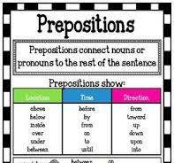
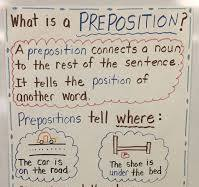

🚀 Week 26 of 35 — Unit 6: Earth, Space & Beyond
Unit 6: Earth, Space, and Beyond | Dates: Mar 15 – Mar 18, 2027 | Week: 1 of 6 | Year week: 26 of 35 |
Class | Sunday | Monday | Tuesday | Wednesday | Thursday |
This week's updates / notes: | Return after Eid Al-Fitr break — school resumes Mon Mar 15. Sun Mar 14 is the final break day, so this is a 4-day week (Mon–Thu). Ease back in; review before continuing new content. | ||||
Morning Meeting | Meet and Greet (Optional) 7:15 am - Mr. Hilton — meet.google.com/ubg-jxxk-zvm | Meet and Greet (Optional) 7:15 am - Mr. Hilton — meet.google.com/ubg-jxxk-zvm | Meet and Greet (Optional) 7:15 am - Mr. Hilton — meet.google.com/ubg-jxxk-zvm | Meet and Greet (Optional) 7:15 am - Mr. Hilton — meet.google.com/ubg-jxxk-zvm | Meet and Greet (Optional) 7:15 am - Mr. Hilton — meet.google.com/ubg-jxxk-zvm |
Vocabulary & Spelling — Word of the Day (G5 + G3) Routine: give the definition first (no guessing) → students share where they might use it, similar/different words. Morphology, examples/non-examples, synonyms/antonyms & more on the vocabulary cards: Vocabulary Padlet (incl. Spelling: words Mon · test Thu) | G5: milestone — An important event or achievement that marks a significant stage in development. G3: acquire — To gain possession of something through effort or experience. Unit: orbit — The curved path one object takes around another in space. | G5: determination — The quality of being firmly committed to a purpose; strong will. G3: assert — To state a fact or belief confidently and forcefully. Unit: recollect — To remember something; to bring back to mind. ——— Spelling — introduce Week 26 lists (practice all week). Low (Building Spelling Skills, List 26): stick, trick, back, zoo, root, quick, look, looked, pack, cook High (Building Spelling Skills, List 26): herd, heard, clothes, close, hour, our, two, too, their, there, ceiling, sealing, shoot, chute, strait, straight, medal, meddle | G5: proficient — Competent or skilled in doing or using something. G3: inquire — To ask for information in a formal or systematic way. Unit: project — A planned piece of work designed to achieve a particular aim or produce something. | G5: demonstrate — To show clearly by giving proof or evidence; to display a skill or quality. G3: negotiate — To discuss something in order to reach an agreement. Unit: trajectory — The curved path that a moving object follows through the air or space. | G5: eloquent — Fluent or persuasive in speaking or writing; clearly expressing feelings or ideas. G3: triumph — A great victory or achievement. Unit: conjecture — An opinion or conclusion formed on the basis of incomplete information. Spelling test — Week 26 lists (Low: List 26 · High: List 26). |
READING | Guided Reading: Warm-Up (whole group) — the teacher will begin the lesson by briefly reviewing the reading and comprehension skills learned in previous classes: identifying characters, setting, plot, and understanding the sequence of events in a story. Practice: reading and comprehension activity — the teacher gives each small group a text appropriate to their reading level (short story, book chapter, poem, or informational text). Students read in their groups, discussing characters, setting, plot, and main ideas, while the teacher circulates offering support. Wrap-Up: the teacher summarizes the main points of the lesson, reinforcing reading comprehension and summarizing as essential skills for understanding a text, and reviews strategies for summarizing/identifying main ideas. Rotations: SeeSaw — Prepositions · Preposition · Preposition Sort Google Classroom / Worksheets: Worksheets · RazKids, EPIC, Book Bag · Writing station · Kahoot | Guided Reading: ComprehensionPrintablesIdoWedoYoudo.pdf The teacher and students practice reading comprehension strategies within small groups or as a whole group, identifying skills that help understanding of text. Before Reading: activating prior knowledge, predicting, previewing the text, setting a purpose for reading. During Reading: asking questions, visualizing, making connections, summarizing, using context clues, making inferences, rereading for clarity, identifying main idea and supporting details, monitoring comprehension. After Reading: summarizing/retelling, drawing conclusions, answering comprehension questions, discussing and sharing, making connections to real life, creating a graphic organizer, writing a response. | Guided Reading: Review previous lesson. | Guided Reading: Review previous lesson. | |
GRAMMAR (Sun & Tue) WRITING (Mon & Wed) Thu = catch-up IXL this week: Low: Use the correct article: a or an (G1) High: Identify nouns - with abstract nouns (G3) Stretch: Order adjectives (G4) · Identify nouns - with abstract nouns (G5) | Grammar (Sun) — Articles & Interjections OBJ: Use a/an/the correctly; identify interjections and their punctuation Packets — Low (K-1): K: Review: Sentences, G1: Review — Common/Proper Nouns (teacher intro a/an/the) · Mid (2-3): G2: Review — Nouns/Pronouns/Verbs (teacher models articles), G3: L1.6 Adjectives and Articles (articles focus), G3: Review: Adj./Articles/Adv. · High (4-6): G4: L1.8 Articles, G5: L1.19 Articles, G5: L1.17 Interjections, G6: L1.22 Articles, G6: L1.19 Interjections A planet, an astronaut, the universe. Grammar anchor charts / resources (from the 2025-26 plan): Prepositional Phrase- https://www.brainpop.com/topic/prepositional-phrases/ Google Slide- https://docs.google.com/presentation/d/1nHBeCnzuZhI6pWKwLeRK33NKqvr7STZ9/edit#slide=id.p4   | Writing — What makes an imaginative narrative? Story-map the touchstone Watch What is an Imaginative Narrative — Ep.1 (Padlet series) and read/watch touchstone How to Catch a Star (Padlet mentor read-alouds); label the story-map (character, setting, problem, events, solution); co-build the rubric. Grammar link: nouns — character (who) and setting (where). TWR: but/so IS story grammar — retell the touchstone as one sentence set: "The boy wanted a star, but it was too far away, so he ___." Every story this unit gets the same one-sentence treatment. Unit resources: Unit 6 Fiction Writing Padlet IXL: Setting or character picture (G1) — Identify story elements (G3) — Stretch: G4 — G5 | Grammar (Tue) — Abstract, Collective Nouns & Gerunds OBJ: Identify abstract nouns, collective nouns; G6: gerunds as verbal nouns Packets — Low (K-1): K: Review — Common and Proper Nouns, G1: L1.1 Common/Proper Nouns (teacher intro abstract nouns: peace/joy) · Mid (2-3): G2: L1.1 Common and Collective Nouns (collective focus), G3: L1.2 Abstract Nouns · High (4-6): G4: L1.1 Common and Proper Nouns (review; extend to abstract/collective), G5: L1.1 Common Nouns (extend to abstract nouns), G6: L1.15 Gerunds, Participles, and Infinitives Space crew, fleet, constellation (collective). | Writing — Invent a character and a setting Model inventing a character (name, one trait) and a setting (any world — space, jungle, city, under the sea) for the class story; students invent their own and orally rehearse describing both to a partner. Grammar link: adjectives make a character/setting vivid. TWR: appositive introduces the character — "Zara, a brave astronaut, stepped onto the red sand." (Low/Med frame: "___, a ___ ___, ..."); expand the setting with Where? When? Mentor: The Snowy Day by Ezra Jack Keats (Padlet mentor read-alouds) — steal one move that makes the setting feel real. Resources: Create a Character worksheet (Padlet student organizers) — Brainstorming Settings worksheet (Padlet student organizers) | Catch-up day — reteach or extend this week's grammar and writing; finish unfinished drafts; assign this week's IXL practice (links in the left column: Low = reteach, High = consolidate, Stretch = extension). |
MATH Pacing W25 · B8 Decimals W22–W25 | |||||
Differentiation | Each lesson includes opportunities for partner practice, common misperceptions, independent practice, and a challenge question for differentiation. | Each lesson includes opportunities for partner practice, common misperceptions, independent practice, and a challenge question for differentiation. | Each lesson includes opportunities for partner practice, common misperceptions, independent practice, and a challenge question for differentiation. | ||
EXPLORER 3-day plan (Mon–Wed) The Solar System IXL this week: Low: Identify the Planets in the Solar System (Gr 3) · High: Identify the Planets in the Solar System (Gr 4) Stretch: Identify Objects in the Solar System (Gr 5) · Earth's Rotation and Orbit (Gr 4) | Entry Point (Day 1 — Sunday): Entry Point — Space Walk (scale distances through the halls) · done on the SUNDAY the unit starts (Day 1) Entry hook (Sunday, Day 1) — Space Walk: walk through the halls with the planets placed to mirror the scale distances of the solar system. ‘How far apart are the planets really?’ Build a class Wonder Wall of questions. Set the mission: every explorer is preparing for the Space Explorers Showcase in Week 6 — a small performance on the planets & solar system for parents (with a readers-theatre + exhibition). Planet roles are assigned in Week 1. | Mon · Hook + Investigate ▶ Hook video: National Geographic ‘Solar System 101’ (≈4 min) Vocab: solar system, orbit, planet, star. Planet Pop Quiz (10 mins): “Can you name all the planets?” Display the 8 planets (use your Solar System Box). Which is biggest? Smallest? Closest to the Sun? Closest to Earth? Watch ‘The Planet Song’ and ‘Solar System 101’ (NatGeo) — Padlet. Investigate — Scale Model (25 mins): in groups, give the planet-size data (Mercury ≈0.5 cm, Earth ≈1.3 cm, Jupiter ≈14 cm…) and build a scale line-up from the Sun. Planet Diameters & Model Scale Table, ‘Why is Pluto not a planet?’ — Padlet. Prior-year printables: Planet Fact Cards (Padlet · Topic 2) · Fact Hunt (Padlet · Topic 2) Objective: Name the 8 planets and identify which is biggest, smallest, and closest to the Sun and to Earth. Assessment: Point to and name a planet from the Solar System Box when asked (e.g., “Which one is Earth?”). Differentiation: name a planet with the Solar System Box + adult pointing support / name a planet independently using the Solar System Box / name, order, and compare planets (biggest, smallest, closest) independently Objective: Use given size data to build a scale line-up of the planets by distance from the Sun. Assessment: Place a planet card in the correct position in the scale line-up and explain why it goes there. Differentiation: place a planet card with a labelled line-up + adult support / place a planet card independently using the data table / place all planet cards in order and explain the scale reasoning independently | Tue · Apply + Record Apply: ‘Draw Your Solar System’ (Padlet) — each explorer draws & labels the 8 planets in order from the Sun. Prior-year printables: Planets Sort & Order Activity (Padlet · Topic 2) · Solar System Cut & Stick (Padlet · Topic 2) Record: a planet fact card on SeeSaw — one fact per planet. Name the Sun as our nearest star. Objective: Draw and label the 8 planets in order from the Sun and identify the Sun as a star. Assessment: Record one fact per planet on a SeeSaw fact card and state that the Sun is a star. Differentiation: label planets using a word bank + adult support / label planets independently with the word bank / draw, label, and record a fact for each planet independently | Wed · Review + Check Review: planet-order song/game; ‘To Scale: The Solar System’ (Padlet) to compare distances. Reading (Gr 2-3): 'Our Home in Space' (Grade 2-3 Readings Pack) · Readings Pack — ADD PADLET LINK Quick check: put the 8 planets in order; the Sun is a star. Extra check: BrainPOP Jr: Solar System Launch the Showcase: assign each explorer a planet / role for the Week-6 readers theatre. Objective: Put the 8 planets in order from the Sun and state that the Sun is a star, not a planet. Assessment: Quick check: order the 8 planets and answer “Is the Sun a planet?” Differentiation: order planets with picture cards + adult support / order planets independently with picture cards / order planets from memory and explain that the Sun is a star | Review / catch-up — consolidate Mon–Wed learning; complete recordings/reflections; reteach or extend as needed. |